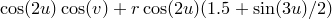

Of the settings which can be set with the set command, some refer to PyXPlot’s global environment and whole multiplot canvases. Others, such as set width and set origin refer specifically to individual graphs and vector graphics items. For this reason, whenever a new multiplot graphics item is produced, it takes a copy of the settings which are specific to it, allowing these settings to be changed by the user before producing other multiplot items, without affecting previous items. The settings associated with a particular multiplot item can be queried by passing the modifier item to the show command, followed by the integer identification number of the item, as in the examples:
show item 3 width # Shows the width of item 3 show item 3 settings # Shows all settings associated with item 3
The settings associated with a particular multiplot item can be changed by passing the same item modifier to the set command, as in the example, which sets the width of item 3 to be :
set item 3 width 10*unit(cm)
After making such changes, the refresh command is useful: it produces a new graphical image of the current multiplot to reflect any settings which have been changed. The following example would produce a pair of plots, and then change the colour of the text on the first plot:
set multiplot plot f(x) set origin 10,0 plot g(x) set item 1 textcolour red refresh
Another common use of the refresh command is to produce multiple copies of an image in different graphical formats. For example, having just developed a multiplot canvas interactively in the X11_singlewindow, copies can be produced as eps and jpeg images using the following commands:
set terminal eps set output 'figure.eps' refresh set terminal jpeg set output 'figure.jpg' refresh